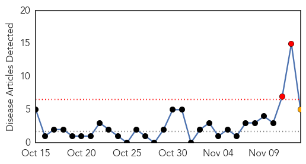
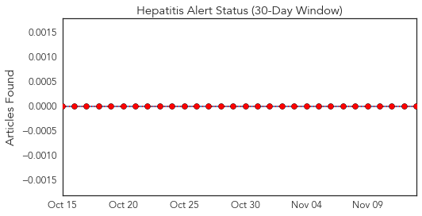
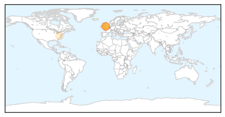
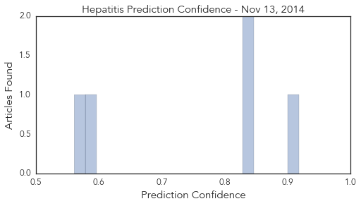
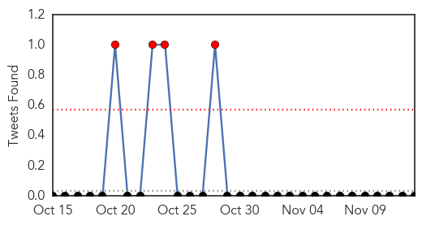

Hepatitis
30-Day Web Trend
2 alerts, 1 warnings

30-Day Twitter Trend
0 alerts, 0 warnings

Article Locations
Article Confidences
Top Articles:
- 0.918
- Reports of MRSA, Hepatitis E in pork products in some European countries
- 0.832
- Hundreds of former patients tested for HIV or hepatitis after 'unhygienic' dentist is accused of ignoring infection control rules
- 0.832
- Hundreds of former patients tested for HIV or hepatitis after 'unhygienic' dentist is accused of ignoring infection control rules
- 0.589
- English dentist sparks HIV concerns
- 0.561
- Duh: Sick days for restaurant workers?
Top Tweets:
-
No tweets found for Nov 13, 2014
Chikungunya
30-Day Web Trend
0 alerts, 0 warnings

30-Day Twitter Trend
4 alerts, 0 warnings

Article Locations
Article Confidences
Top Articles:
Top Tweets:
-
No tweets found for Nov 13, 2014